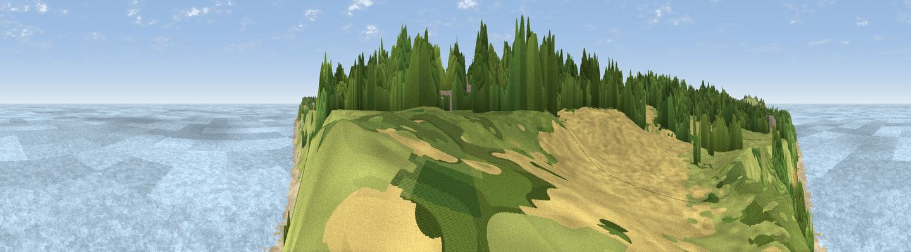
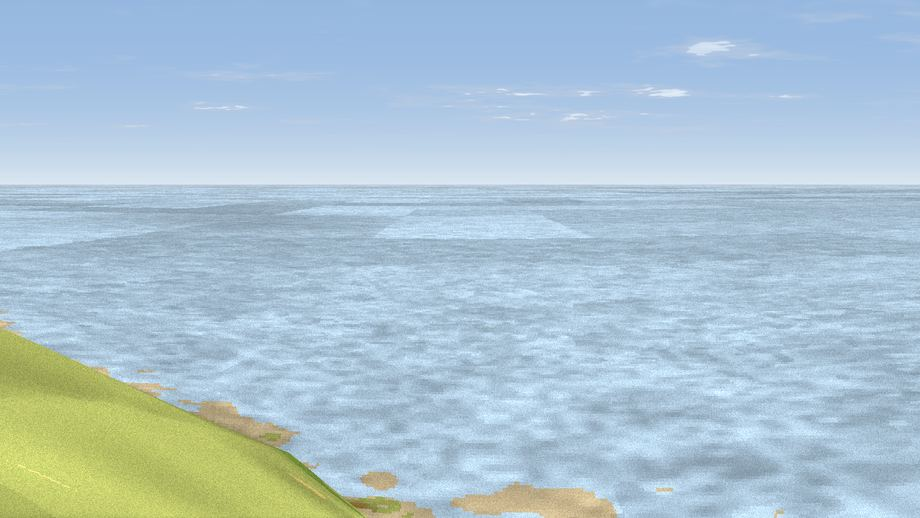
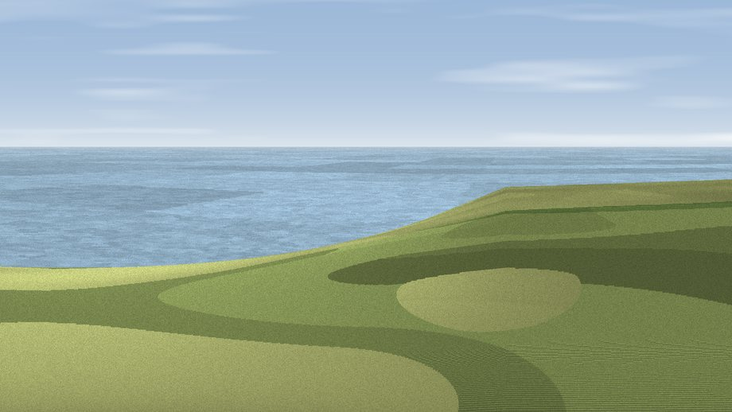

Viewpoint near Sidestrand
#8528 in England · top 8% of its area beats it · near Sidestrand · path 290 mWhere it is
The exact computed spot (TG 25925 40075). Green wedges show where the rendered camera views below look. Click the marker for map links.
Public access: the nearest public right of way is about 290 m away — the final stretch may cross private land. Computed from Natural England's CRoW access layer and OpenStreetMap rights of way — not the legal definitive map. Always verify locally.
The view, rendered

A 360° render of this exact spot computed from the terrain model, tree cover and land cover — summer colours, afternoon light, calibrated against photographs of famous viewpoints. Real trees, hedges and buildings will differ in detail.
Through the camera


Rendered views along the best directions of this panorama.
The panorama
Grey silhouette: terrain skyline in each direction (720 bearings, Earth curvature and refraction included). Dashed green: skyline with trees (+15 m) and buildings (+8 m) as obstacles. Blue strip: how far the ground is visible on each bearing.
Where the view opens
Wedge length = distance to the farthest visible ground on that bearing (vegetation-aware). Rings at 10, 25 and 50 km.
What fills the view
74% water · 8% grassland · 7% cropland · 6% woodland · 5% bare ground
Angular shares of the visible panorama (visual magnitude), not map area. Landscape diversity 0.40 (0–1 Shannon).
Key numbers
More beautiful places nearby
The staircase of upgrades: each row has a higher view potential than everything closer. Driving times are estimates from straight-line distance, calibrated against real road routing — check an actual route before setting out.
| Place | Direction | Drive | Score |
|---|---|---|---|
| Viewpoint near Overstrand | WNW · 2 km | ~6 min | 67.5 |
| Viewpoint near Weybourne | WNW · 16 km | ~28 min | 68.3 |
| Viewpoint near Claxby | WNW · 127 km | ~151 min | 71.5 |
| Viewpoint near Bempton | NW · 171 km | ~192 min | 72.8 |
| Viewpoint near Speeton | NW · 173 km | ~194 min | 74.4 |
| Viewpoint near Speeton | NW · 174 km | ~195 min | 80.0 |
| Olivers Mount | NW · 191 km | ~210 min | 80.3 |
| Viewpoint near Ravenscar | NW · 205 km | ~222 min | 82.7 |
52.91057, 1.35851 · source: screening · position refined by local search. Computed location — check access rights before visiting.